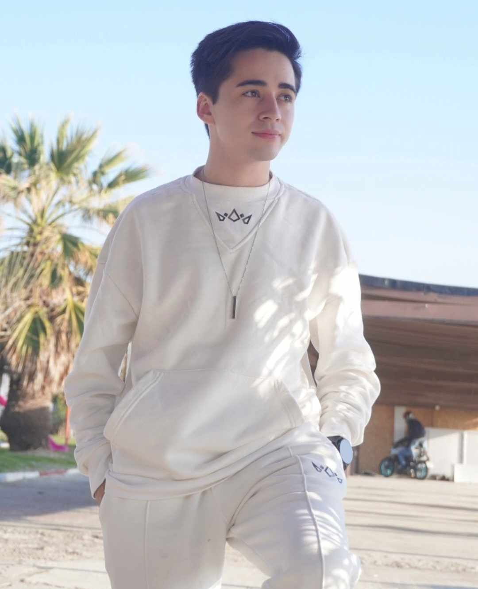
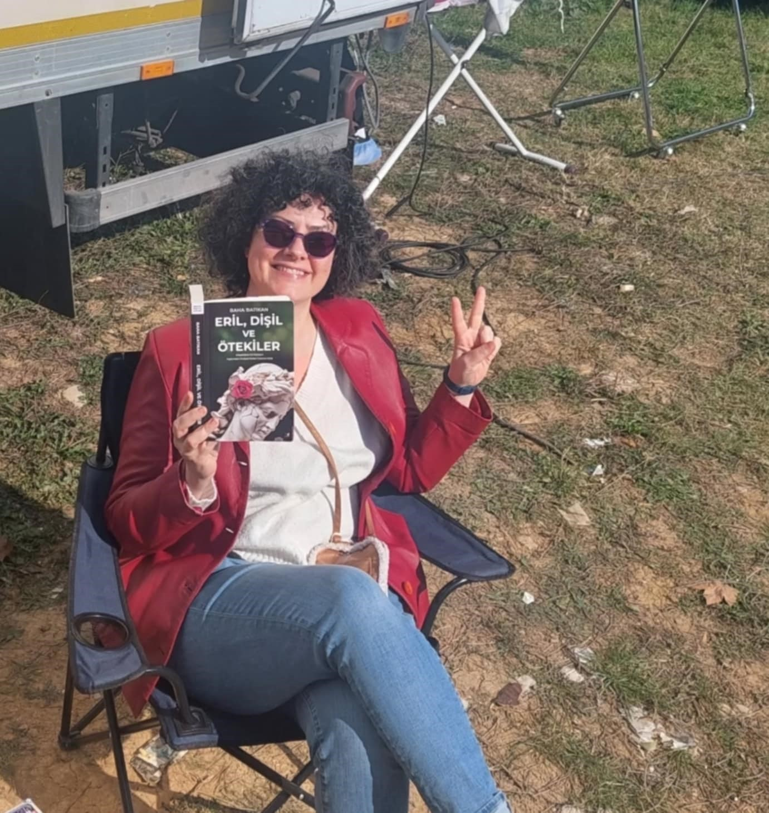
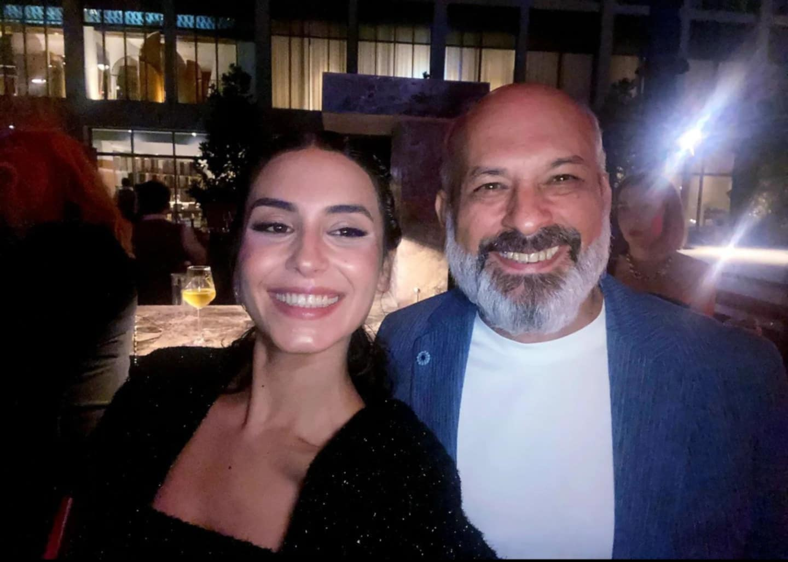

Yabani cast - introducing
Yaman Ali Aydın (Halit Özgür Sarı)
Life has stolen a lot from him. That's why he knows the value of even the needle he has. He has managed to build a world with friends he will never give up on. The difficulties he encountered on the street did not darken his heart, on the contrary, they made him stronger. That's why he has always found a way to grow hope inside him. He knows poverty, hunger, and contempt very well, but he does not get stuck on what he has experienced. There is no such thing as impossible for Yaman. He gets his strength from his friends, whom he considers his family, or rather, from his brothers he chooses from the streets. If necessary, he will give his life for them, if necessary, he will take a life for them.

Rüya (Simay Barlas)
Rüya is a strong-willed young woman who refuses to live by the roles others expect her to play. She is keenly aware of the world around her and the illusions that many are trapped in, choosing not to be fooled by its dazzling appearances. In her family and social circles, she feels like an outsider, standing apart from the people around her. This sense of difference is both a blessing and a curse for her. Rüya longs for sincerity in her relationships and is driven by the search for genuine connections. She is not interested in conforming to societal norms or expectations, valuing authenticity above all else. Despite the challenges of not fitting in, Rüya’s determination to live life on her own terms defines her character.
Neslihan Soysalan (Dolunay Soysert)
Neslihan is a talented and dedicated doctor, but beneath her professional success lies the deep pain of losing her son. She tries to channel this grief into her work, using it as a way to protect herself from the fear of losing her remaining children. Her enduring hope of reuniting with her lost son keeps her going, but the unexpected return of Ali threatens to challenge everything she has held onto. As a mother, Neslihan is constantly in emotional turmoil, torn between hope and the reality of her family's struggles. Her past losses and the uncertainty of her future cast a shadow over her every decision. She is forced to confront the truth that her hope for reunion might not be as simple as she imagined.
Güven Aydın (Tayanç Ayaydın)
Güven, whose name means “trust” in Turkish, lives up to his name by being a calm, dependable, and protective presence in the lives of those around him. Despite the hardships and pain in his past, he remains loving and steadfast, especially towards Neslihan. When he learns that Yaman is his biological son, he becomes determined to protect him at all costs, fiercely ensuring his safety and happiness. Güven's unwavering devotion makes him the kind of father figure that every child would hope for: loyal, strong, and supportive. He plays a key role in his family’s emotional stability, providing a sense of security in times of turmoil. His calm demeanor hides the depth of his commitment, and he is prepared to fight for those he loves. Güven’s story is one of personal sacrifice, as he works tirelessly to provide a stable foundation for his family.
Alaz Soysalan (Bertan Asllani)
Alaz is a man born into privilege, but his arrogance and fiery temper often prevent him from seeing things clearly. As the only male heir of the Soysalan family, he has always felt a sense of entitlement and superiority, which blinds him to the challenges around him. His confidence, shaped by wealth and status, will be tested as he faces unexpected shifts in his life that challenge his place within the family. Alaz’s journey is one of growth, where he must confront his flaws and learn humility in the face of adversity. He is forced to navigate difficult situations that question his long-held beliefs about power and identity. As the narrative unfolds, Alaz must come to terms with the fact that his wealth and position don't guarantee happiness. His character arc is a process of learning to balance pride with the realities of his family’s evolving dynamics.
Asi (Rojbin Erden)
Asi is a tough, street-smart girl who has had to fight for survival in a world that has often let her down. Her difficult upbringing has turned her into a resilient individual who trusts no one, relying only on herself to navigate life's challenges. Despite her hardened exterior, Asi has a strong sense of loyalty to those she considers family, willing to sacrifice everything for them. Her emotional shield prevents her from forming deep connections easily, but those she cares for have her unwavering support. She is someone who can face the harshest of realities and remain strong, even when faced with betrayal or danger. Asi’s strength is not just physical, but emotional, as she constantly guards herself against being hurt again. Her story is about overcoming adversity and learning the value of trust and loyalty in a world that often doesn’t offer much of either.
Çağla Soysalan (Seray Özkan)
Çağla is the forgotten daughter in the Soysalan family, struggling with feelings of neglect and an overwhelming desire for attention and love. Her insecurities push her to take extreme actions as she yearns for validation and a sense of belonging. She feels overshadowed by the rest of her family, and her attempts to be noticed often lead to emotional turmoil. Çağla’s journey is one of self-discovery, where she must confront her flaws and learn to rebuild her self-worth from within. She is desperate to be seen and loved, but it is only through introspection that she can find true happiness. Her story highlights the importance of self-acceptance and the need to address deep-rooted emotional pain. By facing her insecurities head-on, Çağla hopes to reclaim her place in the world and her family.

Cesur (Sezer Arıçay)
Cesur is a charismatic and free-spirited individual who lives life with passion and intensity. His charm and entertaining nature make him a popular figure among his friends and acquaintances, but his life is far from predictable. He thrives on emotional highs and lows, often seeking out trouble when it doesn't naturally find him. Cesur is a troublemaker by nature, not afraid to stir the pot or challenge the status quo. Despite his rebellious exterior, he is deeply emotional and faces life’s struggles with an unpredictable energy. His journey is one of embracing the ups and downs of life and finding balance between the excitement he craves and the consequences of his actions. Cesur’s character embodies the thrill-seeking nature of youth and the unpredictability of living on the edge.

Umut (Ramiz Mullamusa)
Umut is the youngest member of the group, but his wisdom and maturity far surpass his years. Despite facing significant physical challenges, Umut maintains a strong sense of pride and refuses to be pitied by those around him. His resilience is a defining trait, as he approaches life with an unwavering strength that inspires others. Umut's character teaches that true strength lies not in physical abilities but in emotional and mental perseverance. His positive outlook on life, despite his struggles, serves as a reminder that hardships can be overcome with determination. He is the heart of the group, offering wisdom and support to those who need it most. Through his strength, Umut reminds others of the power of resilience and the importance of staying hopeful.
Ece Soysalan (Aleyna Al)
Ece is the light of the Soysalan family, always radiating positivity and hope, even in the face of illness. Her infectious humor and optimistic attitude uplift everyone around her, and she never allows despair to take hold of her spirit. Despite her physical challenges, Ece maintains a strong belief that recovery is possible and keeps that hope alive for herself and those she loves. Her ability to find joy in the darkest of times makes her a pillar of strength for her family. Ece’s journey is one of resilience, as she faces her illness with courage and never lets it define her. She is the emotional glue that holds the family together, offering them hope when things seem bleak. Her optimism and light-heartedness are a constant source of inspiration.
Rüzgar (Bartu Dilmen)
Rüzgar believes he knows best in every situation. While he values those who stay by his side, he often takes them for granted, only appreciating them when faced with the risk of losing them.
Eşref Soysalan (Osman Alkaş)
Eşref is a loving and protective father to Neslihan, providing unwavering support through the challenges she faces. However, his past decisions continue to haunt the family, casting long shadows over their lives. Eşref must navigate the consequences of his earlier actions, which have created both personal and familial struggles. He is a strategist and protector, always thinking ahead to ensure the safety and well-being of his loved ones. Despite his efforts to shield his family, his past mistakes threaten to unravel everything he has worked for. Eşref's resilience is evident as he fights to keep his family intact, but the weight of his decisions forces him to confront difficult truths. His character embodies the complexity of love and loyalty, as he works to atone for the consequences of his past.
Metin (Serdar Orçin)
Metin, portrayed by Serdar Orçin, is a strong and devoted father who feel the need to prove himself to anyone, especially not to his daughter. He shows deep love and commitment to her, embodying the qualities of a good father. However, his character faces significant challenges when confronted with his wife’s infidelity and lies. These are things he doesn't deserve, and they place him in an emotionally painful and unfair position. Metin is not just a father; he’s a man struggling with betrayal while trying to remain steadfast in his values of honesty and integrity. His wife's actions clash with his understanding of fairness and loyalty, which adds emotional complexity to his character. This conflict highlights Metin’s vulnerability and the internal struggle between love, duty, and the pain of being wronged.

Serhan Soysalan (Yurdaer Okur)
Serhan married Neslihan with the hope of eventually becoming the head of the powerful Soysalan empire. However, upon joining the family, he quickly realized that things were not as he had envisioned, and he is now far from happy. His disappointment grows as he finds himself unable to achieve his ambitions within the Soysalan family. As time passes, Serhan feels more and more disillusioned with his position. His role in the family becomes a source of personal frustration, as he struggles to find his place. Despite his earlier aspirations, Serhan's unhappiness with his situation becomes evident. His character is defined by the internal conflict between his dreams of power and his inability to find fulfillment.
Şebnem (Şebnem Hassanisoughi)
Şebnem is a woman driven by passion, ambition, money, and power. She is cunning and always several steps ahead, carefully calculating the consequences of her decisions. Never involved in something that doesn't benefit her, Şebnem is always looking out for her own interests. Her words are deliberately chosen, making it difficult for others to discern her true intentions. She is an expert at manipulating those around her, ensuring they stay close and serve her purposes. Her obsession with glamour and luxury is one of her greatest weaknesses. She harbors a strong desire to mold her daughter, Rüya, into someone just like herself, seeking to pass on her ambitions and manipulative ways.
Özge Aydın (Nur Fettahoğlu)
Özge is not a major actress, but her role adds layers of complexity to the relationships within the show. As Güven's wife, she is a seemingly sweet and gentle character, but her presence often leads to misunderstandings and tension, especially between Güven and Neslihan. Her character is designed to act as a quiet catalyst for conflict, creating subtle emotional challenges in the family. While she may appear as a supportive partner to Güven, her actions can have unintended consequences, especially when it comes to the existing dynamics with other characters. Özge is a figure who might seem kind on the surface, but she is also a product of the family’s intricate relationships, contributing to the emotional drama. Despite not being at the center of all major plot points, she plays a role in creating tension, especially when it comes to protecting her family’s interests.
Feride (Ayşegül Yünsal)
Feride’s role in the series is not entirely clear, but she is an important support figure for the Soysalan family. Although her storyline is less defined, her presence is felt, especially when she provides emotional or practical assistance to the family members. Feride seems to be someone who holds a quieter but meaningful role, offering support during difficult times. Her actions and motivations may become clearer as the series progresses, but for now, she serves as a stabilizing figure in the background. Despite the mystery surrounding her role, she adds a layer of depth to the family dynamics. Her loyalty and support make her a valued ally to the Soysalan family.
Osman (Güray Görkem)
Osman is Eşref's most trusted man, loyal and reliable in his role. While he doesn't have a significant amount of screen time, his presence is quietly influential. He is a character who doesn't seek the spotlight but instead prefers to operate in the background, ensuring that things run smoothly. Osman’s loyalty to Eşref gives him an essential role in the family’s inner circle, providing a sense of security. His reliability makes him a solid foundation for the family, even if he isn’t involved in major plotlines. Though not an overtly prominent figure, Osman leaves a good impression through his dependability and understated wisdom.
Deniz Aydın (Ata Artman)
Deniz Aydın, portrayed by Ata Artman, is a complex and intriguing character in the series. Initially introduced as a charming and seemingly friendly individual, he quickly reveals a darker, more unpredictable side. His psychological complexity makes him an unpredictable figure, as he often operates in morally gray areas. Though his motivations remain unclear for much of his screen time, Deniz's interactions with other characters suggest a potential for manipulation and conflict, making him a character to watch closely.

Leyla / Elif (Gizem Sevim)
Leyla, also known as Elif, is a strong, confident woman who is never afraid to speak her mind. With her striking beauty, bold personality, and fierce passion, she commands attention wherever she goes. Her complex character is defined by emotional intensity and inner conflict, making her a captivating presence in the series. The tension in her relationship (childhood friends) with Yaman becomes a central conflict, especially as her involvement with him isn't well-received by Ruyam fans, hinting at her feels for Yaman.

Tolga (Sarp Ilker)
Tolga is the charming and warm-hearted character who provides a refreshing contrast to the more intense personalities in the show. His kind and genuine nature makes him likable, though his romantic interest in Asi seems unlikely to materialize due to their stark differences.

Zafer Demirhan (Kaan Çakır)
Zafer is the quintessential villain that viewers hate. His actions stir up much of the drama and conflict in the series, making him one of the most disliked characters. However, Kaan Çakır’s portrayal of Zafer adds layers of complexity, ensuring the character isn't just a one-dimensional antagonist. His villainous nature is pivotal to driving the storyline forward, and while his actions generate tension, they also highlight his compelling, multifaceted role in the series.

Melek (Hayrunnisa Uzun)
Melek is the epitome of sweetness and innocence, a young girl whose quiet and reserved nature contrasts sharply with the more forceful, dramatic personalities around her. At first glance, she may seem like a background figure, but her subtle presence lingers long after each scene. There’s a gentle charm in her silence, and her vulnerability captivates viewers, drawing them into her world. Melek's mysterious quietness is not just a passive trait; it suggests a deeper emotional complexity, hinting at a hidden past and unresolved experiences that make her more than just a passive observer of the events unfolding around her. The enigma of her silence gives her an almost ethereal quality, provoking curiosity about the reasons behind her subdued demeanor. Is it the result of a trauma, a deep sorrow, or an intense internal conflict that keeps her from speaking? Her inner world is shrouded in mystery, and viewers are left to wonder what lies beneath her calm exterior. Melek’s purity—both in her actions and her spirit—brings a rare softness to the otherwise turbulent atmosphere of the series. In the midst of the chaos, she offers a moment of serenity, as if she's untouched by the drama surrounding her. Her quietness isn’t a weakness, but rather a strength, as she navigates through the story without drawing attention to herself. Her gentleness becomes her power, and over time, it's clear that there’s more to Melek than meets the eye. Her role may start out as small, but as the narrative progresses, more of her past, her motivations, and the complexity of her character are likely to be revealed, gradually turning her into a pivotal figure whose impact is felt more deeply with each passing episode.

İlker Sualp (Selim Can Yalçın)
Şebnem’s brother and Rüya’s uncle, Selim is connected to key family dynamics in the series, but his role remains secondary. His interactions often revolve around supporting the core characters and offering a sense of familiarity.
Derin Emirdag (Ilayda Akdoğan)
Derin’s role is pivotal, likely involved in significant family or romantic conflicts, with her presence driving much of the drama. She plays a key role in the series’ emotional and narrative developments.
Elmas (Ceren Erginsoy)
Elmas is the mother of Asi in the series. As the mother of such a central character, Elmas plays a crucial role in shaping Asi's character and worldview. Their relationship is one that is rich in emotional depth, with Elmas providing guidance, support, and sometimes conflict to her daughter. Elmas' own complexities as a mother and a strong, independent woman add layers to her character and influence Asi's development throughout the story.
Adem (Hakan Çelebi)
Adem is integral to certain dramatic arcs in the show, with his character’s involvement adding tension to the plot. His role provides a crucial piece to the narrative puzzle.
Hande Emirdag (Nergis Öztürk)
Hande’s character seems to be involved in family dynamics, potentially a source of conflict or support for other characters. She plays a role in expanding the series’ emotional depth.
Bekir (Okan Selvi)
Bekir’s character is likely involved in key conflicts, though his exact role is still unfolding. He is important to the larger narrative framework.
Tuba (Ilayda Sezgin)
She is the daughter of Elmas and Bekir, and the younger sister of Adem and Asi. She wants to be a doctor, so she studies medicine in secret from her family. Tuba is a strong and brave girl who always tries to help people.
Iskender Emirdag (Kanbolat Görkem Arslan)
Iskender's role is critical to the family conflicts within the show. His character adds depth and tension to the ongoing storylines.
Alev (Ebru Aytemur)
Alev in Yabani is a character known for her humor and charm, which bring lightness to the story. Her sharp wit and playful nature make her the one who can ease tense situations and uplift others.
Fidan (Ebru Üstüntas)
Fidan’s role, though minor, plays a part in adding subtle layers to the family and romantic relationships in the series.
Young Yaman 1 (Aras Ulgi)
As the younger version of Yaman, Aras portrays the formative moments of Yaman’s past, providing essential backstory to his character.
Young Yaman 2 (Necati Nazım Tosun)
Portraying a younger Yaman, Necati’s character offers viewers a glimpse into Yaman’s formative years, adding depth to his backstory.
Can (Doğu Balkay)
Can’s role is likely minor but connected to key moments in the series that help develop the larger plot and character arcs.
Young Cesur (Baran Tuğra Genç)
As the younger version of Cesur, Baran’s character provides important backstory, shedding light on Cesur’s past and motivations.

Fiko (Hazar Avcı)
Fiko’s role is currently unclear, but he likely serves a supporting role, contributing to specific plot developments.
Young Asi (Cemre Ceren Tekdoğan)
As a younger version of Asi, Cemre’s portrayal gives viewers insight into the character's past, enriching the narrative with childhood flashbacks.
Hayri Baba (Hamit Serdar Ors)
Hayri's character, likely tied to the main characters, adds emotional complexity or tension in the storyline.